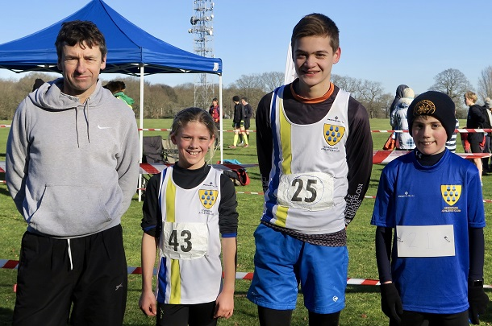

The seventh, and final race of the Kent Fitness League 2018/19 Cross Country series took place at a muddy Blean Woods, Rough Common, Canterbury, on Sunday February 3rd, writes Jim Knight.
Once again, Sevenoaks AC were out in force and the team of 30 seniors and 4 juniors came away with 30 trophies.
After 6 races, the senior team was guaranteed 2nd place behind league champions, Petts Wood, but having won the 6th race in Minnis Bay in January, the Sevenoaks runners were keen to finish with another win.
In the junior race, two laps of the playing fields, SAC athletes Ella Baker, William Hurst and Harvey Taylor performed with distinction. Ella had another excellent win to confirm her place as U13 girls champion. William Hurst received his trophy for 3rd U11 boys in the series, and Harvey Taylor 3rd U17 in the series. Led by head coach, Darrell Smith the SAC juniors are now looking forward to an equally successful summer season in the Kent Young Athletes League of track and field competitions.

In the senior race, 321 runners tackled the slippery footpaths of Blean Woods to complete the challenging 8 km course.
First home was Jay Smith of Dartford Road Runners, in 29.14 to complete his 6th win in the series and claim his prize as 2018/19 champion.
The fastest SAC runner was Darrell Smith in 10th position (2nd M50). However, with 4 M50 wins from earlier in the series, Darrell becomes 2018/19 M50 champion.
A fine run from Andrew Hutchinson brought him home in 20th position, closely followed by Andrew Milne (26th), Daruis Sarchar (29th), Mike Lochead (35th), Jimmy George (41st), and Dan Witt (49th). The team’s other M50 scorer was James Baker in 66th. This gave the men's team a convincing win over Petts Wood AC (2nd) and Dartford Road Runners (3rd).
In the women's race, Renata McDonnell of Deal Tri Club won in a time of 32.57, to record her third win in the series, but finishes the series in 2nd place behind champion Becky Morrish of Petts Wood AC.
The Sevenoaks team was led home by Vanessa Gilmartin (10th) followed by Cath Linney (11th), Heather Fitzmaurice (21st), and Pauline Dalton (22nd). This gave the women's team 2nd place behind Deal Tri Club, but importantly ahead of Petts Wood AC, in 3rd place.
The combined team had a convincing win on the day, to finish on a high; runners-up in the series but with wins in the final two races. The 30 runners who had completed more than 3 races and attended the final race were awarded with runners-up medals.
In addition to Darrell Smith securing 1st M50 in the series, Bridgit Weekes was 2nd W60, Pauline Dalton 3rd W50 and Heather Fitzmaurice 3rd W45.
Team Captain Dan Witt said "We had a great turnout all season with 65 SAC runners taking part this year and a great team spirit. It shows our strength in depth that we had two wins and 3 second places in the 7 races. I should like to thank all the runners who gave up their Sunday mornings to compete for us."
The SAC senior results were as follows:
| Ov Pos | Lg Pos | Runner | Age | Time | Club | Rating | # Races |
|---|---|---|---|---|---|---|---|
| 10 | 10 | Darrell Smith | 51 | 30:54 | Sevenoaks AC | 96.09 | 13 |
| 20 | 20 | Andrew Hutchinson | 39 | 31:55 | Sevenoaks AC | 91.74 | 8 |
| 26 | 26 | Andrew Milne | 36 | 32:34 | Sevenoaks AC | 89.13 | 22 |
| 29 | 29 | Darius Sarshar | 49 | 32:52 | Sevenoaks AC | 87.83 | 7 |
| 36 | 35 | Mike Lochead | 33 | 33:13 | Sevenoaks AC | 85.22 | 7 |
| 42 | 41 | Jimmy George | 37 | 33:36 | Sevenoaks AC | 82.61 | 8 |
| 51 | 49 | Daniel Witt | 44 | 34:12 | Sevenoaks AC | 79.13 | 52 |
| 69 | 66 | James Baker | 54 | 35:13 | Sevenoaks AC | 71.74 | 22 |
| 78 | 74 | Jim Harness | 51 | 35:59 | Sevenoaks AC | 68.26 | 10 |
| 80 | 76 | Simon Truett | 44 | 36:08 | Sevenoaks AC | 67.39 | 4 |
| 84 | 79 | Jatinder Soomal | 36 | 36:26 | Sevenoaks AC | 66.09 | 7 |
| 91 | 85 | James Nash | 27 | 36:46 | Sevenoaks AC | 63.48 | 3 |
| 102 | 95 | Andy Evans | 48 | 37:14 | Sevenoaks AC | 59.13 | 44 |
| 106 | 97 | Stuart Thompson | 44 | 37:27 | Sevenoaks AC | 58.26 | 8 |
| 108 | 99 | Graham Dwyer | 46 | 37:37 | Sevenoaks AC | 57.39 | 7 |
| 114 | 10 | Vanesa Gilmartin | 43 | 37:52 | Sevenoaks AC | 92.04 | 11 |
| 117 | 11 | Catherine Linney | 49 | 37:59 | Sevenoaks AC | 91.15 | 29 |
| 143 | 21 | Heather Fitzmaurice | 49 | 39:24 | Sevenoaks AC | 82.30 | 77 |
| 144 | 22 | Pauline Dalton | 54 | 39:27 | Sevenoaks AC | 81.42 | 45 |
| 156 | 132 | Toby Fitzmaurice | 18 | 40:08 | Sevenoaks AC | 43.04 | 4 |
| 186 | 150 | Hugh Shewell | 29 | 41:34 | Sevenoaks AC | 35.22 | 21 |
| 188 | 152 | Duncan Cochrane | 61 | 41:38 | Sevenoaks AC | 34.35 | 31 |
| 195 | 36 | Nicki Thompson | 42 | 41:47 | Sevenoaks AC | 69.03 | 23 |
| 210 | 167 | Duncan Warwick-Champion | 54 | 42:32 | Sevenoaks AC | 27.83 | 23 |
| 212 | 43 | Sarah Shewell | 59 | 42:35 | Sevenoaks AC | 62.83 | 109 |
| 239 | 51 | Rhea Malkin | 33 | 44:29 | Sevenoaks AC | 55.75 | 6 |
| 246 | 56 | Paula George | 54 | 45:02 | Sevenoaks AC | 51.33 | 5 |
| 249 | 58 | Ella Pyman | 52 | 45:09 | Sevenoaks AC | 49.56 | 11 |
| 286 | 204 | Lionel Stielow | 70 | 48:25 | Sevenoaks AC | 11.74 | 13 |
| 335 | 226 | James Fitzmaurice | 76 | 58:01 | Sevenoaks AC | 2.17 | 71 |
{kind=link}
Congratulations to the 30 runners on the day and all the runners over the seven matches. The full results are here.